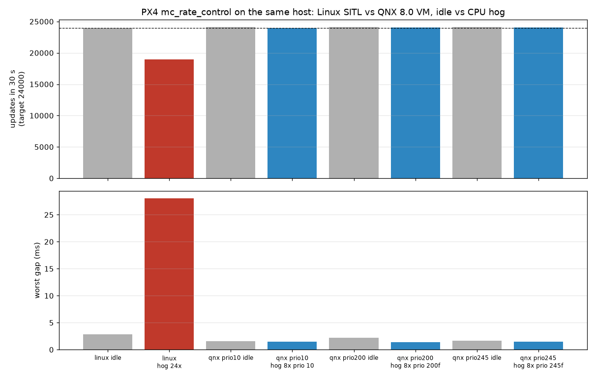

PX4 is an open-source flight controller used on drones, VTOLs and rovers. It normally runs on NuttX (flight boards) or Linux. In this codelab you run PX4 v1.17.0 on QNX 8.0 inside a QEMU virtual machine and fly it with PX4's built-in SIH simulator.
qcc toolchainmkqnximagepidincat /dev/px4/statels /dev/kvm), 8 GB RAM, about 15 GB free diskgit, cmake, ninja, qemu-system-x86_64, uvAll scripts used here are in the px4-qnx repo.
Clone the port repo. It holds only patches and scripts. Upstream PX4 is fetched separately.
mkdir -p ~/px4ws && cd ~/px4ws
git clone https://github.com/Sarcastic-Soul/px4-qnx.git
cd px4-qnx
Fetch PX4 v1.17.0 with submodules (this takes a while), then apply the QNX patches:
scripts/fetch-upstream.sh # -> ../work/PX4-Autopilot, branch qnx-port
scripts/apply-patches.sh # git am patches/*.patch
Expected output ends with the five patch titles, for example:
posix: add QNX 8.0 toolchain, platform detection and qnx_sitl board
...
qnx: /dev/px4/state resource manager module
Create the Python environment PX4 uses for code generation:
scripts/setup-venv.sh
PX4's code generators (uORB messages, parameters, MAVLink) run on the host with Python. Only the C/C++ is cross-compiled. scripts/build.sh sources qnxsdp-env.sh, points CMake at the QNX toolchain file, and builds the qnx_sitl_default board.
scripts/build.sh
Negative : qnxsdp-env.sh only works in bash. The script runs it in bash for you. It also sets TMPDIR to ~/qnx-vm/.tmp, because qcc writes large temp files and some hosts mount /tmp with a small quota.
At the end you should see a QNX binary:
build/qnx_sitl_default/bin/px4: ELF 64-bit LSB pie executable, x86-64, ...
dynamically linked, interpreter /usr/lib/ldqnx-64.so.2, with debug_info
PX4 already has a POSIX layer for Linux and macOS. The port adds a __PX4_QNX path to it:
Area | Change |
Build |
|
Headers | QNX has |
Priorities | QNX 8.0 reserves priorities 254 and 255. PX4's maximum is capped at 253 |
Threads | QNX threads inherit the creator's scheduling by default, so PX4 now sets |
Positive : Without the PTHREAD_EXPLICIT_SCHED fix, every PX4 work queue silently ran at the same priority (253). Always check with pidin after porting a threaded app to QNX.
scripts/make-vm.sh calls mkqnximage to build a QEMU x86_64 image with 4 vCPUs, 2 GB RAM, a 1 GB /data partition and your ssh key for root login.
ssh-keygen -q -t ed25519 -N '' -f ~/.ssh/id_ed25519_qnx # skip if you have it
scripts/make-vm.sh
It also passes -C 10000 to the kernel (procnto), which sets a 10 kHz system tick:
grep procnto ~/qnx-vm-px4/output/build/ifs.build
# ... procnto-smp-instr -mr -d 0777 -u 0777 -C 10000
Negative : QNX 8.0 is tickless, but normal timers (nanosleep, condition-variable timeouts) still round to the tick. With the default 1 kHz tick, PX4's 800 Hz loop runs in 1 ms and 2 ms steps. 10 kHz removes most of that jitter.
Boot it headless and copy PX4 in:
scripts/run-vm.sh # waits until ssh on localhost:2222 answers
scripts/deploy.sh # stripped px4 + ROMFS -> /data/px4
scripts/vm-ssh.sh uname -a
QNX px4-qnx 8.0.0 2026/06/05-16:26:03EDT x86pc x86_64
The VM's root filesystem is a read-only boot image, so PX4 lives on /data/px4.
scripts/px4-vm.sh start --clean
scripts/px4-vm.sh log | tail -5
INFO [qnx_state_resmgr] serving vehicle state at /dev/px4/state
INFO [px4] Startup script returned successfully
INFO [commander] Ready for takeoff!
px4-vm.sh starts PX4 with PX4_MAVLINK_PARTNER_IP=10.0.2.2. That is the host as seen from a QEMU user-NAT guest, so MAVLink reaches the host with no port forwarding.
Run PX4 shell commands through the same script:
scripts/px4-vm.sh cmd commander status
scripts/px4-vm.sh cmd work_queue status
Start QGroundControl on the host. It listens on UDP 14550 and the vehicle appears within a few seconds. Arm, take off, upload a mission and fly it like any PX4 vehicle.
../work/venv/bin/python tests/test_flight.py
[test_flight] armed
[test_flight] hold: 300 samples, alt min 9.95 max 10.10
[test_flight] mission 4/4
[test_flight] landed
[test_flight] PASS
The script arms, takes off to 10 m, checks the hold stays within ±1 m, flies a 20 m square mission, lands and disarms.
scripts/vm-ssh.sh "pidin -p px4 -F '%h %p'"
wq:rate_ctrl 253f
:nav_and_controllers 240f
wq:INS0 239f
wq:hp_default 235f
logger 228f
wq:lp_default 203f
mavlink_rcv_if0 173f
commander 167f
log_writer_file 87f
f means SCHED_FIFO. The rate controller is at the top, then the attitude/position controllers and the EKF, with logging near the bottom. A normal QNX program (like your shell) runs at priority 10.
tests/test_priorities.sh
Run 8 busy threads (2x the VM's CPUs) next to PX4 and measure the rate controller for 30 s:
bench/run_timing_qnx.sh # load at priority 10
HOG_PRIO=200f bench/run_timing_qnx.sh qnx-200 # load at FIFO priority 200
{"label": "qnx idle", "events": 24098, "avg_us": 1249.95, "max_us": 1566, ...}
{"label": "qnx hog 8x prio 10", "events": 24006, "avg_us": 1249.95, "max_us": 1438, ...}
The rate controller stays at about 24000 updates per 30 s (800 Hz) with or without the load. For comparison, bench/run_timing_linux.sh runs the same test against stock Linux SITL on the host. There it dropped to 18953 updates with a 28 ms gap. Unprivileged Linux SITL can't use real-time priorities, so this is not an RT-Linux comparison.

Try HOG_PRIO=245f. Now the load is above the EKF (239), and the script reports ekf2 updates: ... hog 1. Strict priorities do exactly what you set. Choosing them is a design decision.
The port adds a small PX4 module that is a QNX resource manager. It registers /dev/px4/state with the process manager, so any program can read live state with plain file I/O:
scripts/vm-ssh.sh cat /dev/px4/state
t_us=2112350094 armed=0 nav_state=4 x=-0.08 y=-0.07 alt=-0.29 vx=-0.05 ... battery=1.00
The core of it is a few calls:
int chid = ChannelCreate(_NTO_CHF_FIXED_PRIORITY | _NTO_CHF_DISCONNECT | _NTO_CHF_UNBLOCK);
dispatch_t *dpp = dispatch_create_channel(chid, DISPATCH_FLAG_NOLOCK);
iofunc_func_init(_RESMGR_CONNECT_NFUNCS, &connect_funcs, _RESMGR_IO_NFUNCS, &io_funcs);
ocb_funcs.ocb_calloc = ocb_calloc; // each open(): new OCB with a uORB snapshot
io_funcs.read = io_read; // returns that OCB's snapshot as text
iofunc_attr_init(&attr, S_IFCHR | 0444, nullptr, nullptr);
resmgr_attach(dpp, &rattr, "/dev/px4/state", _FTYPE_ANY, 0, &connect_funcs, &io_funcs, &attr);
Positive : By default, QNX message passing runs the server thread at the client's priority, so a real-time reader would lift it. _NTO_CHF_FIXED_PRIORITY turns that off: the server stays at 97, below every control loop. Check it with on -p 200f cat /dev/px4/state and pidin -p px4 -F '%h %p' | grep qnx_state.
tests/test_fault_isolation.sh
During a mission, this starts a separate process that takes 8 threads of CPU and 512 MiB of RAM and then segfaults. It also restarts PX4's logger in flight:
badapp: crashing now
Memory fault (core dumped)
rate controller while badapp ran: ~8000 events, 1249.8us avg
[test_flight] PASS
PASS: mission completed ... PX4 pid unchanged, core file written
The QNX dumper saved the crashed process's core in /data/var/dumper, ready for ntox86_64-gdb.
scripts/px4-vm.sh stop
kill "$(cat ~/qnx-vm-px4/output/qemu.pid)"
You built PX4 with qcc, flew it on QNX 8.0, and saw strict priority scheduling, process isolation and a resource manager at work.
docs/porting-notes.md: every change made for QNX and whydocs/results.md: all measurements and how they were takenbench/trace_ratectrl.sh: capture a tracelogger kernel trace of the rate controller